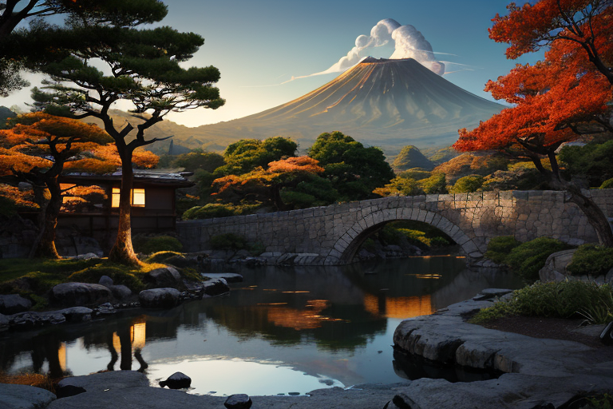
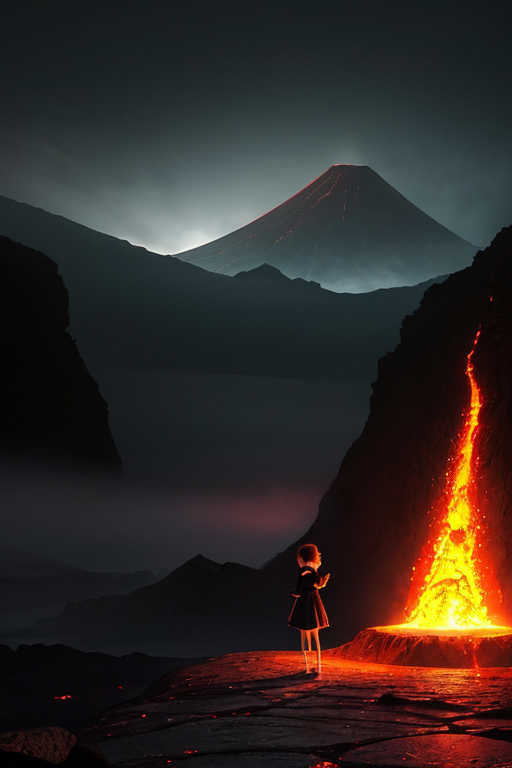
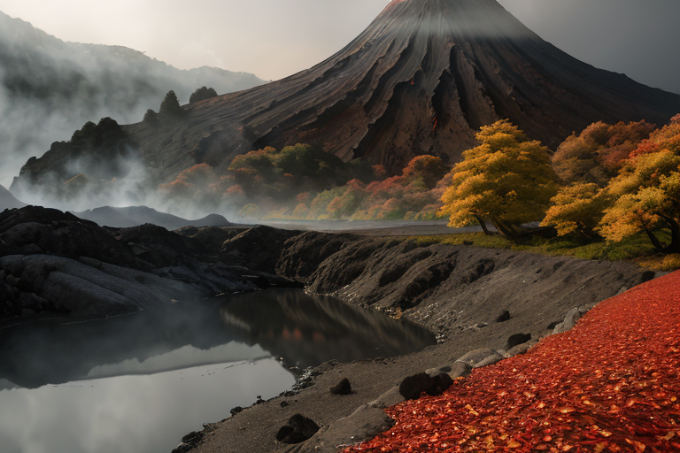
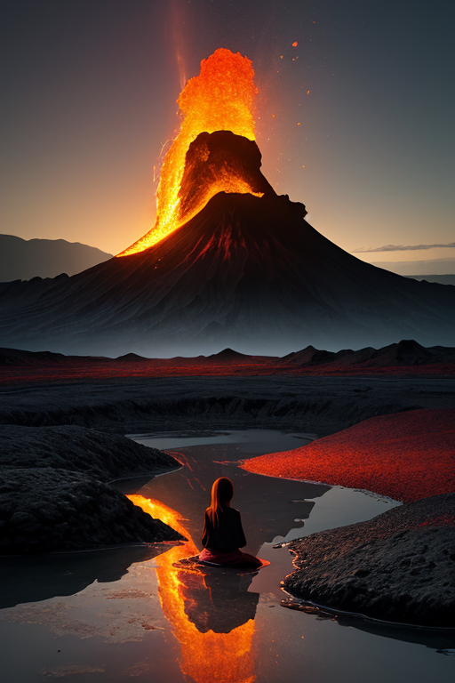
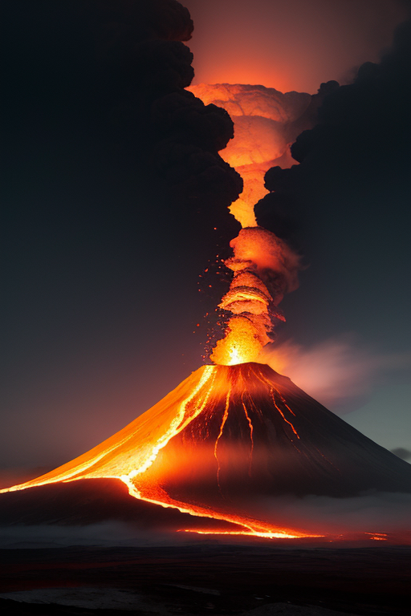

第一章 現実の熊本
あなたはまだ気づいていない。この土地にも、王がいることを。
阿蘇山は静かに息づいていた。外輪山の緑の彼方から、ごくわずかな噴煙が立ち上る。観光客の笑い声が風に乗り、草原を渡る。しかし、その地底深く、膨大な熱量は封じられ、眠り続けている。火封印の世界線。この王国では、すべての激しさが抑制され、静謐の仮面を被っている。
熊本城の石垣は、新しい石と古い石が複雑に絡み合い、巨大な傷跡を抱えてそびえていた。2016年の震災は、築城の名手・加藤清正の知恵をもってしても防ぎきれない「歪み」だった。崩れた石は一つ一つ拾われ、元の位置に戻されることを待っている。水前寺成趣園の池面は鏡のように平らで、そこに映る空も、雲一つない完璧な青だ。
しかし、完璧すぎる静けさには、不穏が潜む。黒川温泉の湯煙の奥で、通潤橋のアーチを支える石の軋みのように。この土地は、崩れることを知り、それでも立ち上がることを選んだ。その選択の重みが、地層を伝い、眠れる王に微かな振動として届いている。

第二章 歪みの兆候
阿蘇山の噴煙は、今日も静かに空へと溶けていた。しかし、ヴァルニアの指先が触れる噴気口の岩肌は、いつもより熱く、微かに脈打っていた。地底からの圧力が、目に見えない結界を押し上げている。火封印の劣化だ。
「王よ、歪みが加速しています」
城郭と火山の王、クマモトリア・ヴァルカンは、熊本城の石垣の影に立っていた。崩落した天守閣の修復工事は続くが、彼の目は地中を見据えている。2016年の地震は、歪みの調整を超えた衝撃だった。それ以来、封印を支える地脈に、修復しきれないほどの「ひび」が走った。
通潤橋の水路を伝う水音が、一瞬、乱れた。アーチの石がかすかに軋む。それは物理的な音ではない。地層を伝う圧力の波だ。王の胸に、封印の火種が蠢く。理性が激情を押さえ込む。まだ、ではない。調整は続く。崩れても立てるかという問いは、今、地底深くで重い鼓動を打ち始めていた。

第三章 王の葛藤
水前寺成趣園の池面に、一片の紅葉が落ちた。その揺らぎが、王の内側で共鳴する。阿蘇の地底で、封印されたマグマの奔流が、2016年の「ひび」を伝い、ゆっくりと上昇を始めていた。調整では抑えきれない熱量。ヴァルニアの報告は、日増しに切迫する。
「このままでは、微調整の域を超えます。圧力は、分散の限界に」
王は城天守の影に立ち、掌を握りしめた。指の間から、微かな赤い光が漏れる。封印を解き、地底の圧力を一気に解放すれば、大規模な噴火を引き起こす。だが、それを封じ続ければ、今度は別の場所に歪みが集中し、新たな大災害を招くかもしれない。激情は解放を叫び、理性は忍耐を促す。
黒川温泉の湯煙の向こうで、くまモンの笑顔が揺れる。この町は、一度崩れ、もう一度立ち上がった。その記憶が、王の胸の闘志に重なる。崩れても立てるか。その問いは、今、王自身への審問となっていた。解放は破壊か。封印は怠慢か。答えは、熱く沈黙する地層の奥底にしかない。

第四章 妖精との対話
水前寺成趣園の池面に、阿蘇の外輪山が逆さに映る。静寂は完璧だった。その静けさの底で、ヴァルニアは語り始めた。
「我々は、火を封じてきました。清正公が石垣を積み、城を築いた時から。彼はこの地の火の気を、城郭という形に昇華させた。激情を、堅固な意志の形に変えたのです」
妖精の声は、湯気のように微かに揺らぐ。
「2016年。あの地震は、城も、地も、人も、一度崩しました。しかし、王よ。崩れた石垣は、一つ一つ番号が振られ、元の位置に戻されつつある。それは、ただの復旧ではありません。『崩れても立てる』という、この土地の意志そのものの再確認なのです」
ヴァルニアの目が、静かに燃えた。
「封印は、消滅ではありません。激情を、次の立ち上がりのためのエネルギーとして地中に蓄えること。火を消すのではなく、その熱量で、次の礎を温めておくこと。それが、この王国の在り方です」
王は、からし蓮根の辛さのような、切ない覚悟を胸に感じた。

第五章 微調整と余韻
阿蘇山の噴気口から立ち上る白い蒸気が、夕日に染まっていた。ヴァルカンは、その前に佇み、掌をかざした。指先から漏れる微かな光が、地中に脈打つ熱の流れに触れ、ほんの少し、その圧力を分散させる。完全な鎮火ではない。激情を封じ込め、巨大なエネルギーを、ゆっくりと冷ましていく微調整だ。
熊本城の石垣を積み直す音が、遠くから聞こえる。一つ一つの石が、元の場所に戻されるたび、土地の「記憶」が修復されていく。彼の調整は、目に見える復興を加速させるものではない。むしろ、人々が「崩れても立てる」という意志を失わないよう、その心の襞をほんの少し整えることだ。偶然、足を止めて城を見上げる観光客。ふと、次の一石を探す職人の手が滑らずにつかめること。そんな些細な確率の調整が、彼の役目だった。
ヴァルニアが傍らに現れ、熱い息を吐いた。「王。次の歪みは、いつ来るかわかりません」
「わかっている」彼は答えた。激情は封じた。だが、その代償として、彼自身の内にあった「闘志」という感情が、少し色褪せていくのを感じていた。無感情に近づくことは、調整者としての完成かもしれない。それでも、からし蓮根の辛さや、黒川温泉の湯気の温かみを、もう少し覚えていたいと思った。
静謐が戻った阿蘇の草原に、くまモンの風船が一つ、ふわりと飛んでいった。
あなたの町にも、王がいる。